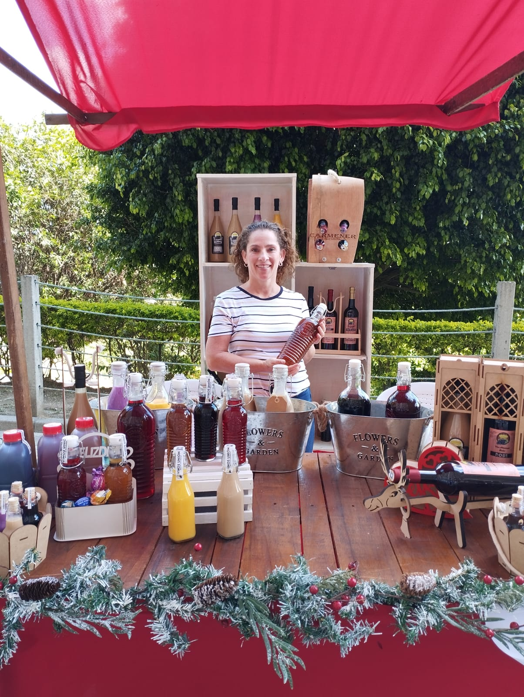

Vinos Unión nació de una simple pero significativa experiencia familiar que transformó nuestra pasión en un proyecto que hoy nos llena de orgullo. En octubre de 2021, durante una visita a mi familia en La Unión, Valle del Cauca, decidí llevar algunos vinos de la región como obsequio para unos amigos en Medellín. Al probarlos, quedaron tan encantados con su sabor único que surgió una idea que cambiaría el rumbo de nuestro futuro: ¿por qué no compartir estos maravillosos vinos con más personas?
Mi familia es la encargada de la producción de estos vinos, cultivados con esmero en la tierra fértil de La Unión, Valle del Cauca, una región que se destaca por su tradición vitivinícola. Así, nació Vinos Unión. Un nombre que representa la conexión entre la familia, los amigos y, sobre todo, los momentos especiales que nos unen. Creímos que no había mejor forma de transmitir ese espíritu que ofreciendo un producto que simboliza justamente eso: la unión de sabores, de experiencias y de recuerdos.
En Vinos Unión, nuestra misión es ofrecer vinos de alta calidad, elaborados con dedicación y pasión por nuestra familia en el corazón del Valle del Cauca. Queremos compartir con nuestros clientes la tradición vinícola de La Unión, creando momentos de unión y celebración que perduren en el tiempo. Nos comprometemos a ofrecer una experiencia única a través de nuestros productos, destacando el sabor auténtico y el amor por el arte de hacer vino.
Conoce nuestros productosSer reconocidos como una marca líder en la comercialización de vinos colombianos, inspirados en la unión familiar y de amigos. Para 2030, aspiramos a expandir nuestra presencia tanto a nivel nacional como internacional, llevando los vinos de Vinos Unión a nuevos mercados y creando experiencias que conecten a las personas con la tradición y la cultura vinícola de La Unión, Valle del Cauca.
Descubre nuestra variedad